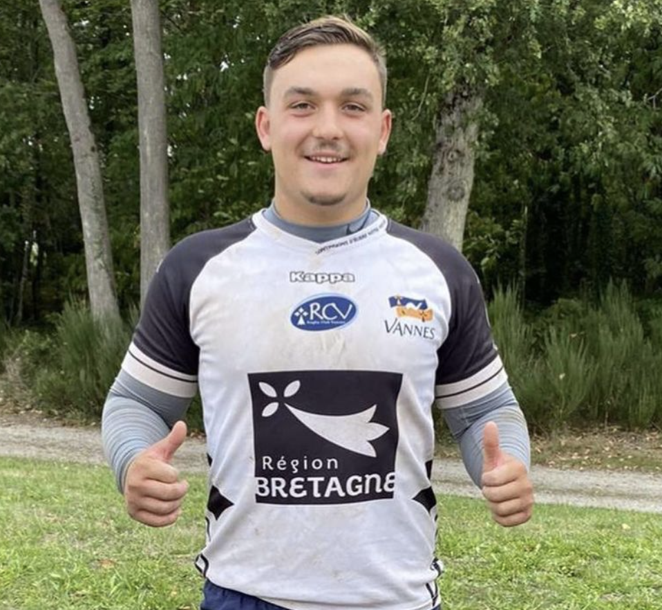
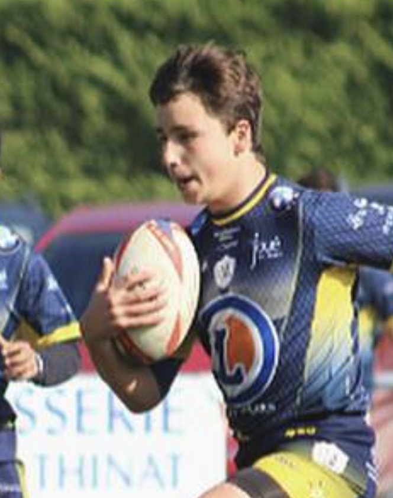
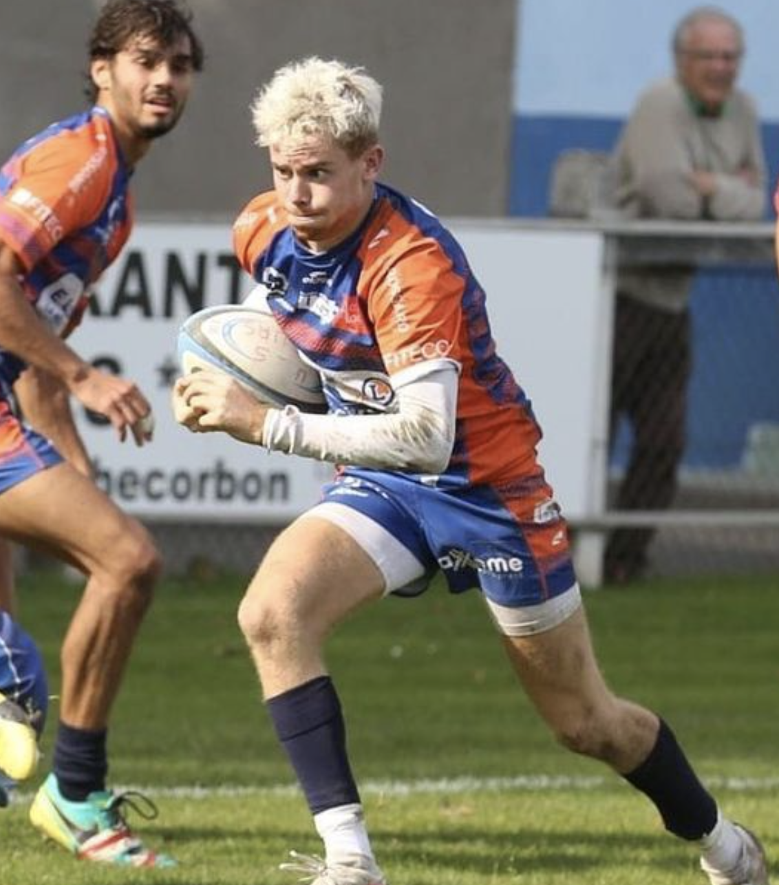
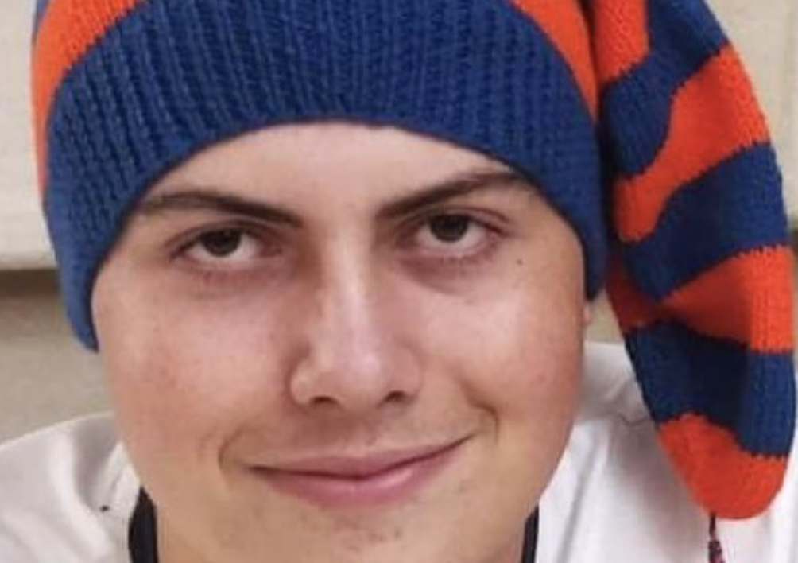
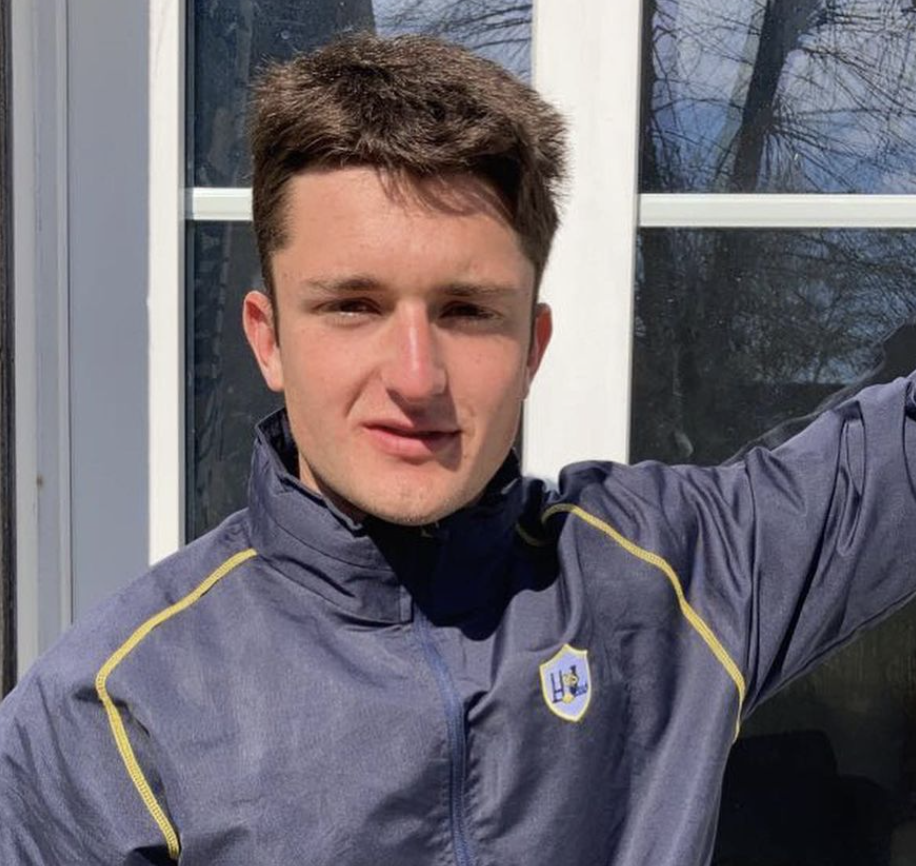
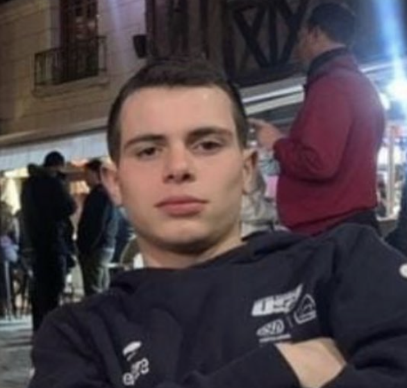
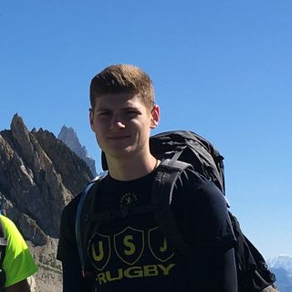

Paul Giblbaud
Paul Guilbaud is in the spotlight with the bi7's. More commonly known as polo, this great lover of all kinds of beer started playing rugby at the prestigious Saint Pierre des Corps club. Very quickly above the group, he goes to his favorite club, that of playing the tricks where he will do his classes until less than 14 before being recruited by a small French club: ASM.
Paul will thus join Auvergne and will play under the colors of the yellow army for 3 years where he will evolve as a hooker. A little bored by the Auvergne climate, our national polo decides to go and see the climate on the Brittany side (everything at the top left above Bordeaux). Paul will sign a year with valves where he will play little following the global pandemic. He will then decide to return to tours for his studies and will sign with us tours.
Welcome to the bi7´s Paul family

Auguste Frey
We wish in this fleeting return of the sun you present Auguste aka Gaul who will also be able to illuminate the field with his presence. Indeed Auguste will start his rugby season at the club of esvres montbazon (yes another one and if you're not happy hang on because there are others coming) in less than 12 years after getting a little lost on the football pitches of larcay he will leave them quickly because I quote "there were too many baltringues".
Auguste is very excited about rugby, he will even go so far as to put an ear of corn in his underpants to express his joy in this sport, which will subsequently earn him his subtle nickname La Gaule.
Always ready to decant a coco to whoever touches the ball or his beer Auguste is imperial off the field. At his sight, the captain's bottles are emptied of fear, the parrots fly away and the bottles turn red with stress.
He is a client of choice for this group and we welcome him to this great family.

Mermoz
Today it is the young Amaury Marol alias "Mermoz" who is in the spotlight. This young son of a druid started playing rugby at an early age with friends in the yellow and black colors of esvres montbazon. It is obvious that rugby is made for him. He arrives at @usjouerugby in -14 years and will make his classes there as a back until under 16 before spinning at the rival club, @ustoursrugby.This fiery young center endowed with half a brain during the day which liquefies in the evening is a real fan of parties and nights under the stars. Indeed the young Amaury becomes more or less ingenious under the influence of alcohol, going from the idea of making a dye, to that of seducing a 50-year-old mother in front of her son. He latter will be an essential element on and off the field. Welcome to you young biceps

Antonin Rondeau
Today, it is the young Antonin Rondeau who is in the spotlight. Antonin started rugby at a very young age. He began his young career at 5 years old, playing tricks under the eyes of his father. A great man of Touraine rugby: Cyril Rondeau alias BIBI. Very quickly he fell in love with this sport and flew to the promised land of Esvres. Club in which he develops and quickly understands the basics of rugby. Chaining fight after fight Antonin seduces more than one coach and goes back to playing the tricks. However this young second line does not seem seduced, not enough fight, too many intelligent people on the ground and decides to try his hand at the rival. The US TOURS is seduced but asks him to reduce his consumption of boxes which is starting to be significant. Club in which he still evolves as a national junior. The young rondeau could have had a great career but cruciate ligaments you know. He will come back quickly, finally we wish him.

César Delorme
César starts rugby at a very young age in the prestigious club of Esvres Montbazon, he will find a certain charm in the field where he will discover a passion for the Daisies that he will put on the corner of the ear hair in the wind to go flirt with young people gymnasts next to the stadium! He will continue his aberrant young career played tricks brother. Where he will evolve as a 3rd wing line. After cutting his surfer wick, Caesar becomes a predator and cuts up everything that moves ranging from the winger looking for himself in the rugby to the pillar. But César, Toulouse at heart, who grew up for 6 months in Mirail, a fairly hectic city in Toulouse. It is seen forging his mind, a cardboard mind. Indeed, this young third line unpins at the slightest fault of French on the ground. But before being a warrior on the ground, he is a soldier outside. Indeed, César never misses the call of the bar on weekends. Always there to turn off the light, he will be able to defend his colors no matter the circumstances.So welcome to you Caesar.

Maël Boubours
At the beginning of the week we give you the Smile with the presentation of a new player who has big biceps. Today it is Maël alias boubours who is in the spotlight. Indeed boubours begins our beautiful sport which is rugby under the colors of esvres, yes another one! He begins his completely crazy young career in u12 brother. Where he will play as opening half and three-quarter center. But his city of hearts will call him back and he will go play at the Loire oval from the u14s after good years in yellow and black. Following too large biceps, Maël will then become a hooker, a modern hooker profile. He will excel in his position and will leave his heart club for us Tours in the second year of U16. Club in which he always evolves.As for off the field, Maël is a shy soldier but he knows how to surprise when necessary. Fan of hops since minot, he will be a strong element for our 3rd half.

Alex aka Kiwi
Today we present to you our first biceps, our first soldier. Coming from the lands and culture of New Zealand, the young Alex Winters, also known as kiwi, arrives at the bi7s to tread the meadow under our colors. Son of a New Zealand monster who played at a high level with the blacks, the young Alex Winters could only inherit his father's descent and height of around 3 meters 16. This young 2nd line player began his career to esvres with his most faithful friends then signs to play the tricks following an astronomical contract proposal. He recently took off to pursue his studies in Angers and is now pursuing a double degree with the SCO. A fan of parties and fun, he will know how to bring good humor and fun to the group. Very Fijian at heart, he does not hesitate to send himself rum at all hours. As charming as he is a surfer, our young kiwi will try to impress you during our 3rd half.